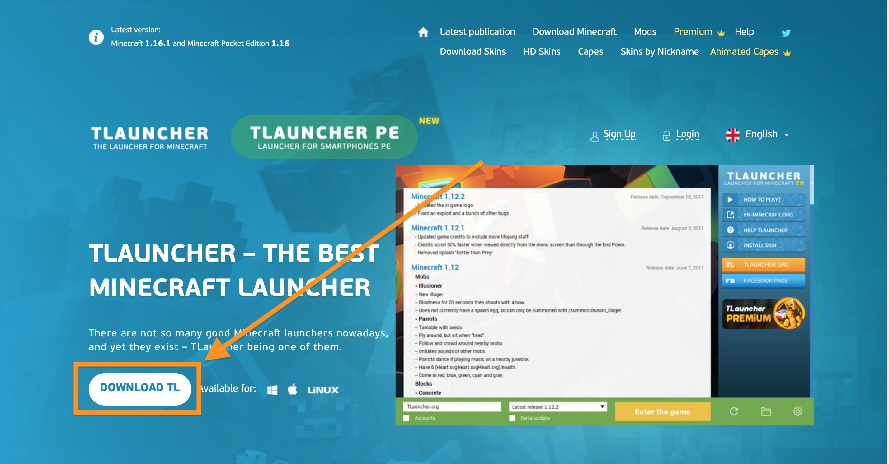
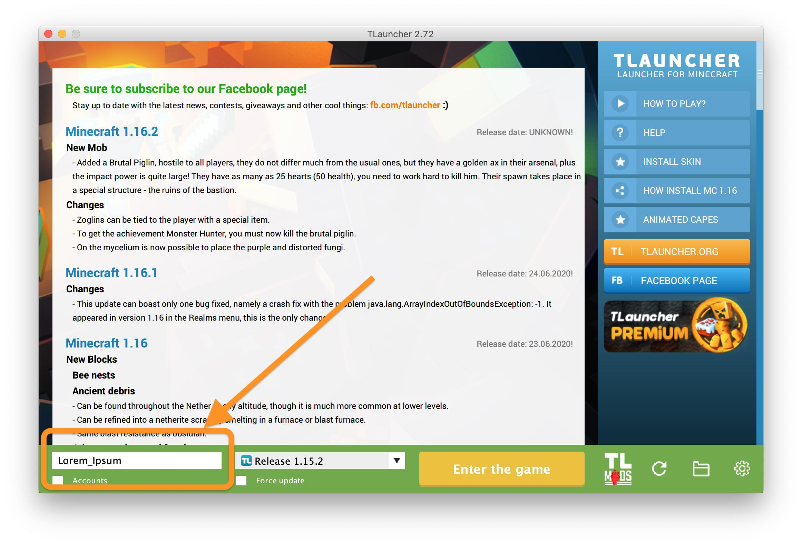
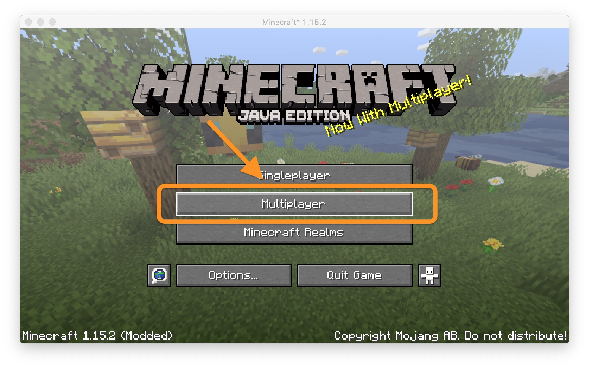
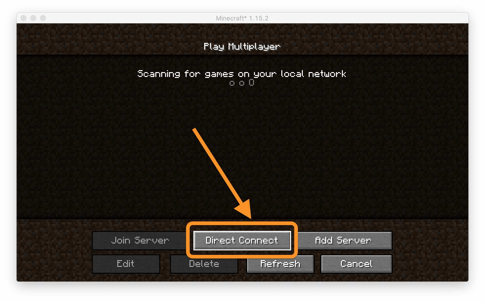
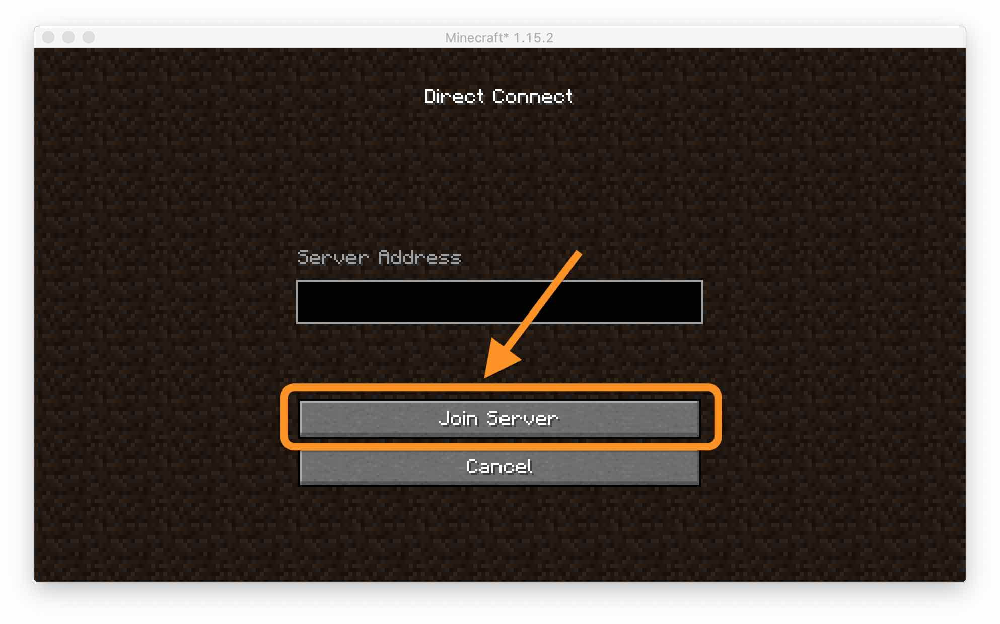

Install and log on to DTUVerse
Get Minecraft up and running on your computer and revisit the memories anytime you like. Start by selecting your Operating System:
Step 1: Install TLauncher
Tip
You may skip this step if you have an official copy of Minecraft already
Download TLauncher
To run Minecraft, download TLauncher from tlauncher.org. To download it click Download TL Button as shown in the image below and choose your desired platform.

Install TLauncher
Open the .exe file you just downloaded and follow through the setup. It may prompt you to install Java if you haven't installed it, allow it to do so.

After the completion of the installation, open the TLauncher
Step 2: Installing
Setting up Minecraft
Choose your name(preferably real name to keep a track of who are logging in). Make sure it contains no spaces, you may use underscore instead of spaces.

Select the version of Minecraft to 1.15.2. It may be either Optifine 1.15.2 or Release 1.15.2, whichever works the best for you. Then click "Enter the Game"

Step 3: Logging on to the server
Setting up Minecraft
After Minecraft is opened and loaded, click on multiplayer.

Click on direct connect.

Enter the IP Address, you may get the IP Address by contacting any of the admins in the whatsapp group or in the announcements channel of discord. Then click Join Server.

Step 4(Optional): Join us on Discord or Whatsapp to Contribute
Click Here to Join Us on Whatsapp
Click Here to Join Us on Discord